Kenz de Rasasi
Highlight filmFragrance, people and exhibition moments.

From concept to final delivery. Film, photography and digital creation.
22 films
Fragrance, people and exhibition moments.
Fashion and accessories in focus.
The exhibition stand, team and visitors.
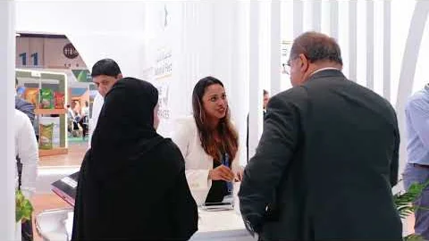
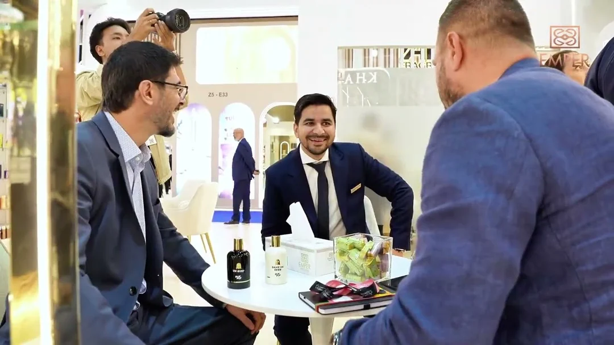
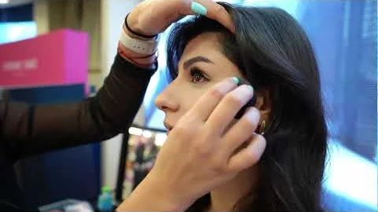
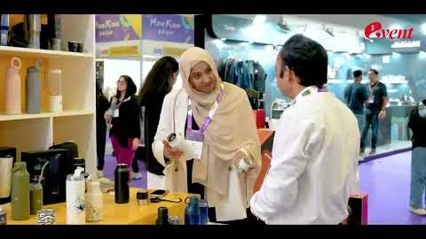
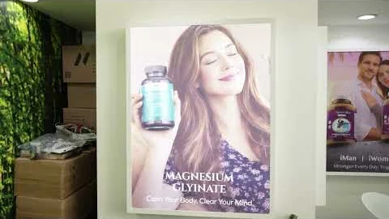
A CGI fragrance product film.
A CGI fragrance product film.
An AI-led explainer film.
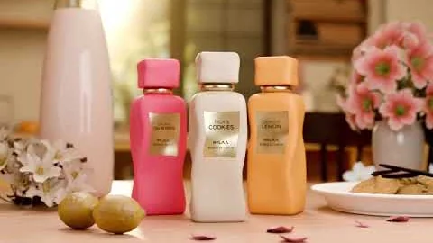
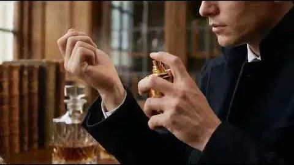
A fashion portrait in motion.
Brand moments in a vertical edit.
Food and lifestyle in a vertical edit.
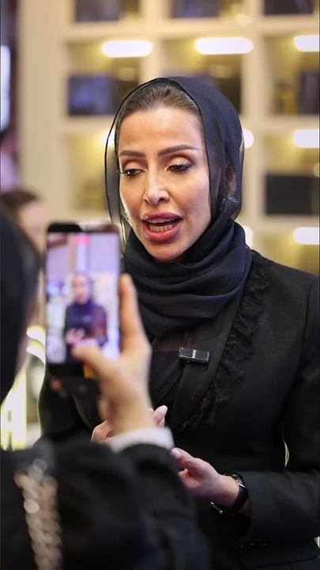
A founder story, made for social.
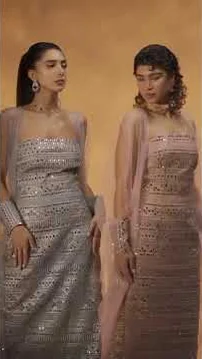
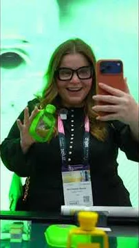
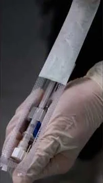
UAE / Bookings & collaborations